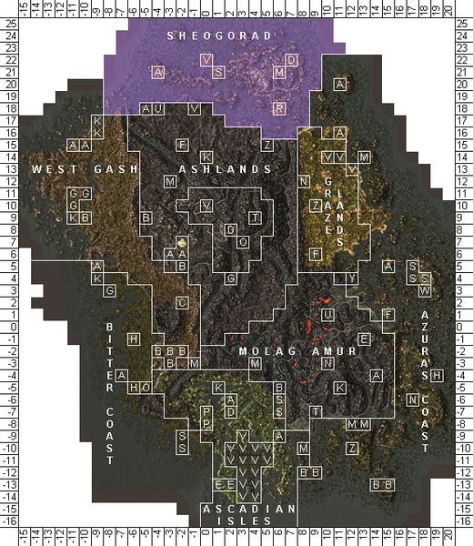

Morrowind:Sheogorad
Morrowind: Places
|
 Map of Sheogorad |
 Sheogorad is littered with ruins |
|
A typical view of the Sheogorad Region |
The Sheogorad region is a wild maritime province consisting of about 28 islands off the north coast of Vvardenfell, Morrowind. The high pillar-like menhirs characteristic of the area also result in hundreds of rocks, either just exposed, or lying just below the surface, which makes marine navigation almost impossible. The only accessible port, Dagon Fel, is on the main island of the archipelago, reached by skirting the region and coming in from the north.